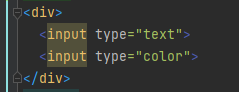
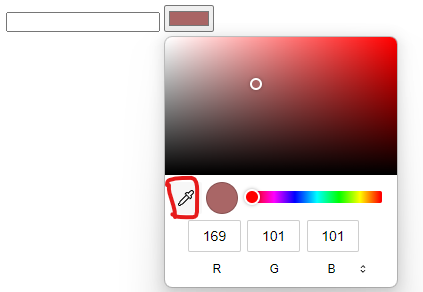

软件的错误
案例1
在word中输出如 =rand(200,99) 按下回车会出现几百页的内容
案例2
在html同时写入两个input 类型分别为 text 和 color

此时点击color上的吸管

此时鼠标定位text中无法切换中文输入法,即使能切换也无法输入中文
作业:编写程序
从一个输入框中读取三个数
这三个数分别表示三角形的边长
判断能不能组成三角形
如果能的话判断是等腰三角形还是等边三角形
import java.util.Scanner;
/*
author:steam-404
*/
public class Main {
public static void main(String[] args) {
//判断三角形
//输入三个数字,判断是否能组成三角形
Scanner input=new Scanner(System.in);
System.out.println("请输入三个数");
double num1=input.nextDouble();
double num2=input.nextDouble();
double num3=input.nextDouble();
//三角形判断条件 任意两个长大于第三边
if(num1+num2>num3||num1+num3>num2||num2+num3>num1){
//判断三角形类型
//判断等边 等腰等
if(num1==num2&&num2==num3){
System.out.println("等边三角形");
}else if (num1==num2||num2==num3||num1==num3){
System.out.println("等腰三角形");
}else {
System.out.println("不规则三角形");
}
}else {
System.out.println("不能组成三角形");
}
}
}
解析:
下一页,三角形测试优化